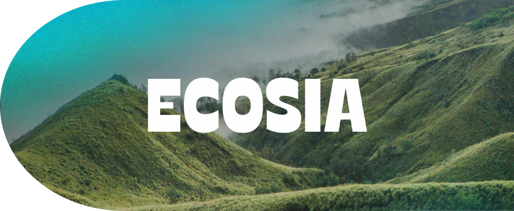

The simplest way to avoid generative AI is to not use it. If there is a time when it is the only option, use renewable generative AI such as Ecosia; as it uses smaller data centers and relies on solar and wind energy. Ecosia is also a search engine which has the option to deactivate AI overviews, unlike Google were it is incredibly hard to turn off Gemini. Additionally, you can educate others on the impacts of generative AI, as many may use it oblivious to its negative effects. Overall, use generative AI responsibly to ensure lesser impact in the future.

Microslop is a helpful website for extra information about generative AI
Pause AI is a movement fighting back against AI. You can get involved and donate to them.
Media Capture Watch is a website showing relationships between AI companies and journalism.
Tech Justice is an organisation which brings justice to people harmed by tech products.